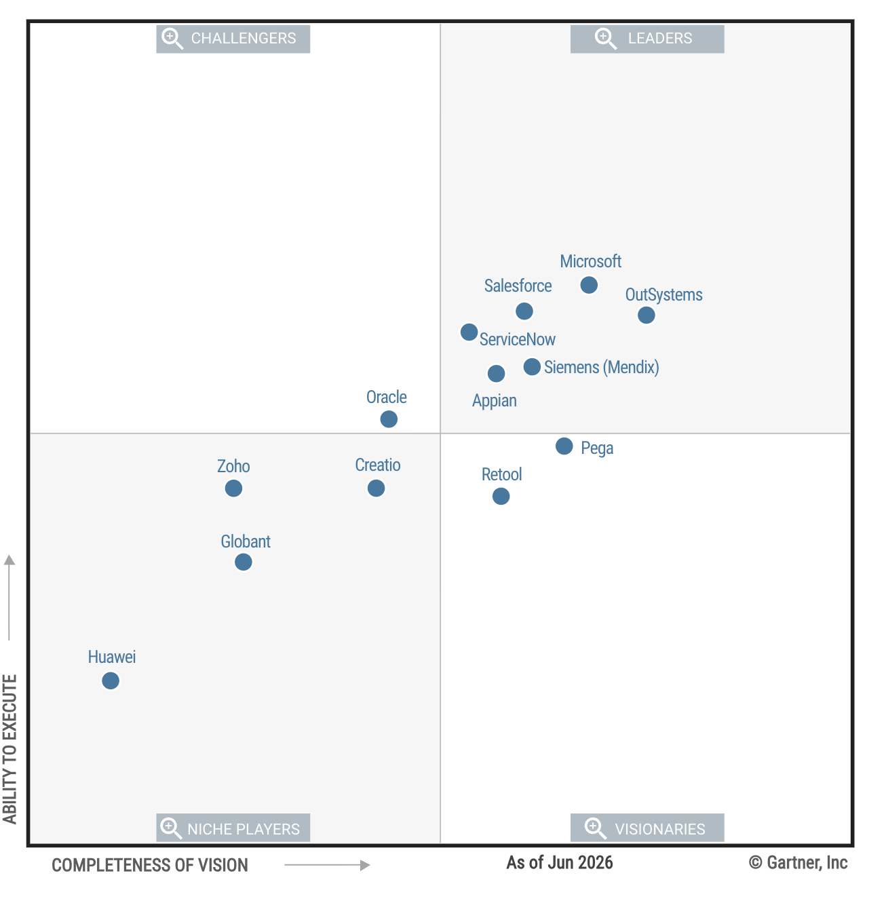

← Gartner Research Brief 사내 배포본
Insights
Magic Quadrant
원문 정보
- 원제
- Magic Quadrant
- 연구 ID
- G00841123
- 저자
- Adrian Leow, Kyle Davis, Mukul Saha, Nitish Tyagi
- 주제
- Software Engineering Technologies and AI Solutions · Enabling AI Software Engineering Foundations
- 원문
- https://www.gartner.com/interactive/mq/8421913

Gartner가 발표한 Magic Quadrant입니다. 다루는 주제: Software Engineering Technologies and AI Solutions.
소프트웨어 엔지니어링 기술과 AI